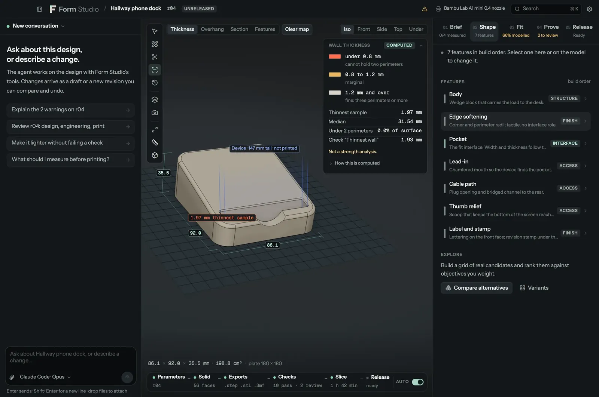
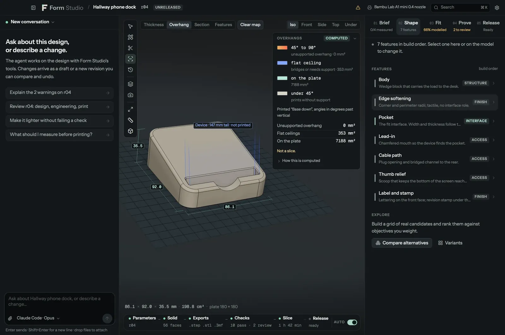
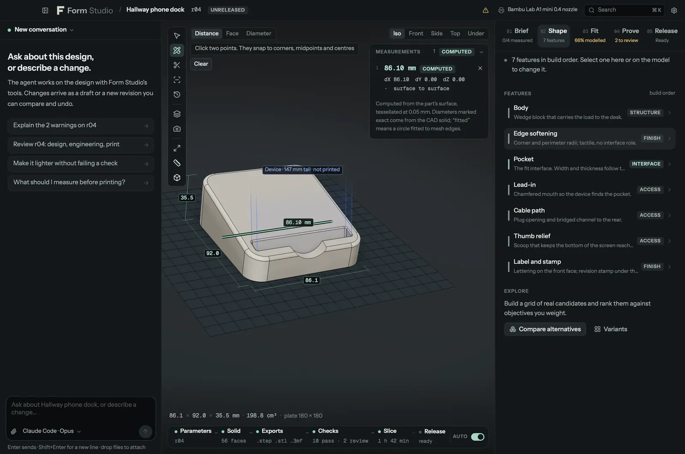
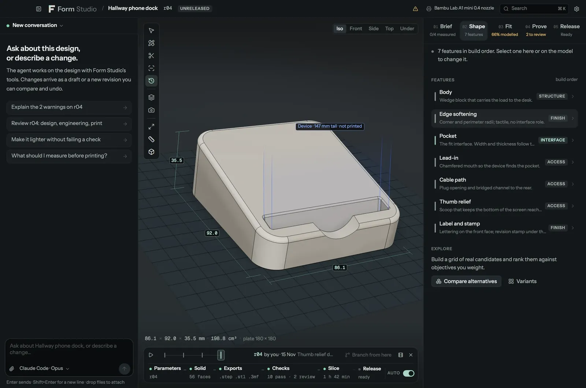
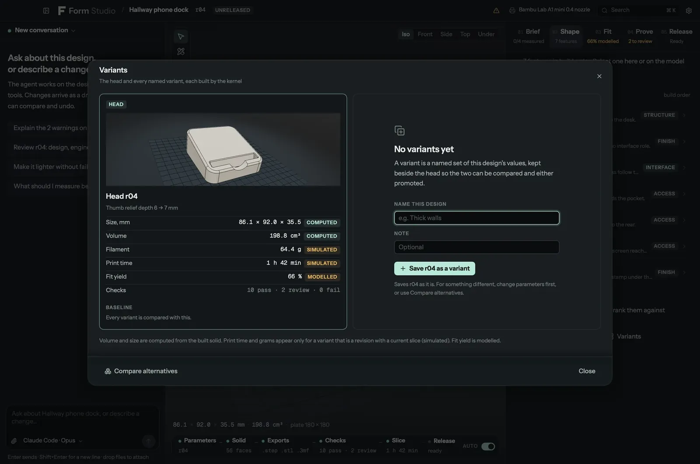
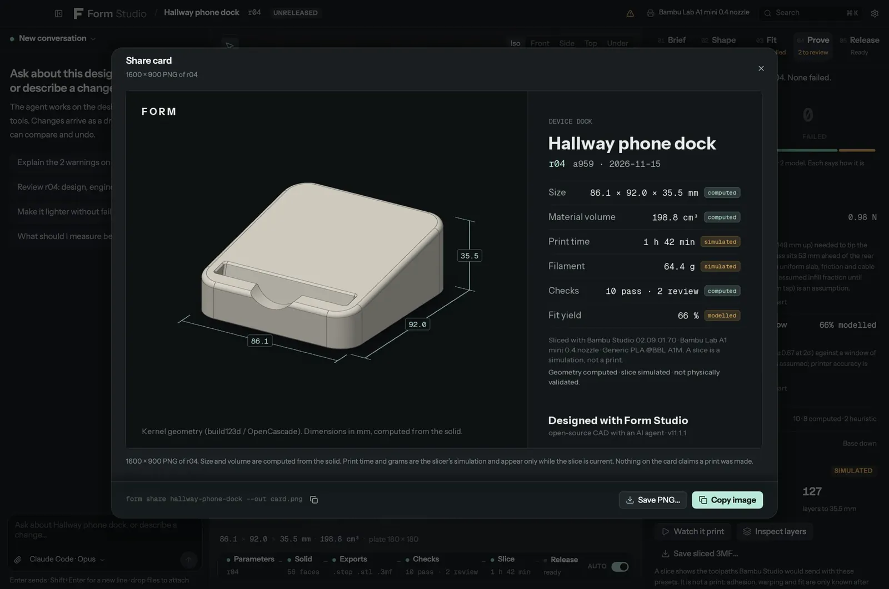
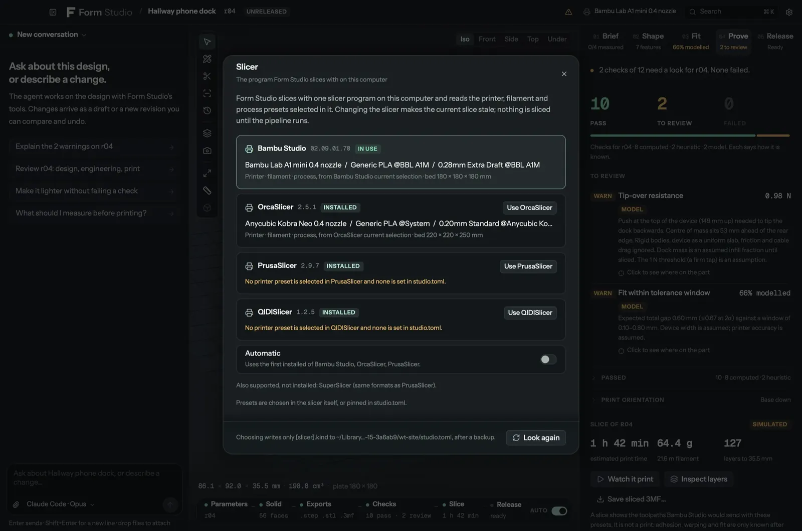
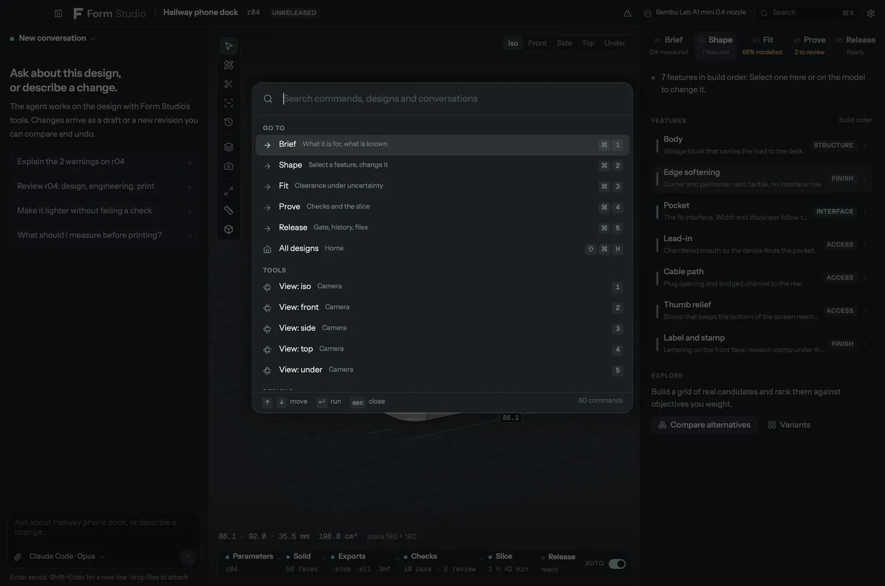
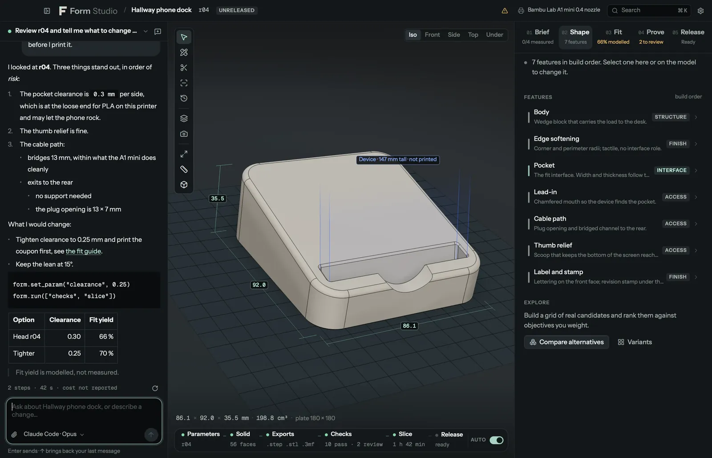

Describe a part. Get a file you can print.
Form Studio is a desktop app in which an AI agent designs 3D-printable parts with a real CAD kernel, checks them, slices them with your own slicer and simulates the print, layer by layer.
macOS, Windows and Linux. Open source, MIT licence.
Form Studio, drawn live in this page with a sample project. The geometry comes from the CAD kernel, the checks and fit model from Form Studio’s engine, and the toolpath from the G-code Bambu Studio 2.9.1 wrote for a Bambu Lab A1 mini. The conversation re-enacts how the project was made.
From a sentence to a released print file.
You describe what the part holds, where it goes and what you measured. An agent writes it as a parametric model in a real CAD kernel, and Form Studio carries every revision through checks, fit, slicing and simulation, until you approve the files.
- 01DescribePlain language, measured dimensions, photos, datasheets and reference STEP files.
- 02DesignThe agent builds a B-rep solid with build123d on OpenCascade. Every change is a revision.
- 03CheckTwelve checks on the solid, a fit model for every interface, statics, analysis maps.
- 04Slice and simulateYour slicer, your presets. The G-code is played back layer by layer.
- 05ReleaseYou approve. STEP, STL, 3MF and G-code are frozen with hashes and a report.
A complete workshop for printable parts.
Design, engineering checks, slicing and release in one native app, and every capability also available from the command line and to any MCP agent.
- Conversations
Many conversations, each with its own agent, model and effort. Steps, views and cost shown as they happen.
Conversations - Real CAD
B-rep solids from build123d on OpenCascade, exported as STEP and STL. Python or OpenSCAD designs.
Designing - Revisions and variants
Every change is a revision with its author. Scrub the timeline, branch from any revision, keep named variants.
Revisions - Checks with evidence
Validity, walls, overhangs, bridges, plate contact, tip-over, fit. Each result says how it is known.
Checks - Fit model
The chance a pocket fits what it holds, from your measurements and your printer's accuracy.
Fit - Analysis and measure
Thickness and overhang maps, section cuts, exact distances and hole diameters, an orientation finder.
Analysis - Print simulation
Your slicer's G-code, played back in 3D with every line type, timed by the slicer's estimate.
Simulation - Assemblies
Assembled, exploded and print layouts, moving hinges and slides, screwdriver access, a bill of materials.
Assemblies - Optimise
Goal seek over parameters with real kernel builds: the lightest hook that still has a safety factor of 3.
Optimisation - Renders and share cards
Photoreal Blender renders in your filament colour, and a share card with every number labelled.
Pictures - Release
One approval by a person freezes the files with SHA-256 hashes and a report. Verify them at any time.
Release - Your tools
Five slicers and their forks, FreeCAD, OpenSCAD, Blender, reference STEP and STL parts, any MCP agent.
Integrations
Know how likely it is to fit before you print.
A pocket 0.3 mm too tight is a failed print. Form Studio models the gap between the printed cavity and the real object from what is known about each: the dimensions you measured, the ones you assumed, and how accurate your printer is.
Then it tells you the cheapest way to raise the odds: measure the object, print a coupon, or print a thin ring cut from the real pocket.
Every revision is rebuilt and checked on the solid.
Each change rebuilds a boundary-representation solid in OpenCascade, then checks it: one valid solid, a closed export mesh, the thinnest wall, overhangs, bridges, plate contact and the force that tips it over.
Each result says how it is known. A measurement on the geometry is computed, a rule of thumb is a heuristic, and a formula with assumptions is a model.
The phone dock at revision 4, as checked by Form Studio. Select a check to read what it measured.
Watch the print before you start it.
Form Studio reads the toolpaths your slicer wrote and plays them back: every layer and every line type, timed by the slicer’s own estimate. Jump straight to the layers with bridges, where prints tend to go wrong.
Parts that go together are checked together.
See a design assembled, exploded, or laid out as it prints, and move each hinge or slide through its range. Form Studio checks overlap, the smallest gap, each joint at sampled positions, and whether a screwdriver reaches every screw.
Hardware comes with its source: screw clearances to ISO 273, heat-set insert pockets, nut traps, magnet pockets and printable threads.
Look closer, from every side.
Maps computed on the real geometry, exact measurements, the revision timeline, variants side by side, photoreal renders and a share card. Every picture here is a screenshot of Form Studio on the sample project.









An agent that works the way an engineer does.
It reads the datasheet, asks what it cannot know, looks at what it built, and fixes what the checks find. You stay in charge of every revision and of the release.

- Asks before it guessesQuestions arrive as answer cards: pick an option or type a value, and the design continues.
- Fix with agentA failed check or step hands its evidence to the agent in one click.
- Reads drawingsPDF datasheets and mechanical drawings are read as images, so their dimensions survive.
- Looks at its workRenders of the real geometry come back to the agent and appear in the conversation.
- Starters that learnSuggestions come from the design in front of you: its warnings, its unmeasured values, its next step.
- Design skillsThirteen skills for intake, FDM engineering, fit calibration, hardware, assemblies and review.
Works with the agent and the slicer you already use.
Pick the agent and model for each conversation inside the app: Claude Code, Codex, Gemini CLI, Cursor CLI, OpenCode, Qwen Code or GitHub Copilot CLI. From their own windows, the same agents and any other MCP client reach the engine through 44 tools, and the open app follows what they change.
Slicing runs in the slicer you have installed, with any printer you configured in it and your filament and process presets.
Everything works without the window.
Every action is a form command that prints JSON, and an MCP tool an agent can call. No feature exists only in the interface. The output below was captured from Form Studio on the sample project.
claude mcp add --scope user form -- form-mcpcodex mcp add form -- form-mcp~/.gemini/settings.json~/.cursor/mcp.jsonStart from a recipe.
A recipe is a family of parts: typed parameters in, one valid solid out, with its own engineering checks. Nine ship with Form Studio, and the community adds more. Open any of them as a new design in one click.
Built in the open.
Form Studio is MIT-licensed and developed on GitHub. Recipes, slicer profiles, agent integrations and measured print results all make it better for everyone.
- Show and tellShare what you designed and printed, with the share card and photos.
- QuestionsSetup help and how-tos in Discussions.
- IdeasPropose a feature and shape it with others.
- Contribute a recipeA folder with recipe.py, meta.json and a preview.
- Report a problemBugs, slicer and printer support, agent support.
- Contribute codeBranch from dev, open a pull request, CI does the rest.
Download Form Studio
One download per platform. On first start, Form Studio finds what is on your computer and installs the rest from inside the app: the parts libraries, a slicer, an agent and its sign-in.
- macOSApple Silicon
FORM-macos-arm64.zip - macOSIntel
FORM-macos-x64.zip - Windowsx64
FORM-windows-x64.zip - Linuxx64
FORM-linux-x64.tar.gz
curl -LsSf https://raw.githubusercontent.com/kaizensx/form-studio/main/install.sh | shuv tool install --python 3.12 "form-studio[all] @ git+https://github.com/kaizensx/form-studio"